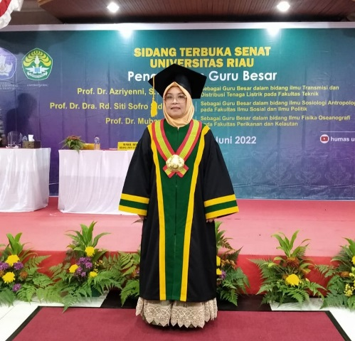

Prof Azriyenni Guru Besar Teknik Elektro Pertama di Riau 15 Juni 2022, 10:33 WIB Oleh : Salahazan Nasution Prof. Dr. Azriyenni, ST, M.Eng merupakan Guru Besar pertama bidang Teknik Elektro di Riau. Azriyenni dikukuhkan sebagai Guru Besar dalam Bidang Ilmu Transmisi dan Distribusi Tenaga Listrik pada Fakultas Teknik Universitas Riau, Selasa (14/6/2022). Dengan demikian dia menjadi profesor kelistrikan pertama di Riau. “Ibu Azriyenni ini adalah orang yang pertama menjadi Guru Besar di bidang kelistrikan di Riau,” ujar Rektor Unri, Prof. Dr. Aras Mulyadi, DEA usai acara pengukuhan di gedung rektorat Kampus Bina Widya. Dalam orasinya, Prof Azriyenni menyampaikan bahwa kontinuitas penyaluran daya listrik sering dihadapkan pada masalah gangguan yang timbul dalam sistem tenaga listrik. Karena itu, estimasi gangguan pada saluran transmisi tenaga listrik sangat penting untuk mempercepat proses perbaikan. “Perbaikan yang cepat akan mengurangi keluhan pelanggan,” jelasnya. Faktor-faktor tersebut, ungkap Azriyenni, semakin penting bagi perusahaan penyedia energi listrik dalam menghadapi tantangan saat ini. Oleh sebab itu, perlu dikembangkan algoritma untuk estimasi gangguan secara akurat dan cepat. Alumnus pendidikan magister dan doktoral di Universiti Teknologi Malaysia (UTM) ini menjelaskan tentang gangguan hubung singkat yang mengakibatkan tegangan atau aliran arus yang tidak normal. Gangguan hubung singkat tersebut dapat menimbulkan terputusnya suplai daya listrik menuju konsumen. “Hal ini dapat mengakibatkan kerugian bagi konsumen dengan terganggunya kegiatan produksi industri dan sebagainya,” tuturnya. Oleh karena itu, beberapa penelitian terkait hal ini mengembangkan metode Teknik Cerdas yaitu Jaringan Syaraf Tiruan (JST) dan ANFIS untuk estimasi gangguan secara akurat dan cepat. Di tengah pengembangan sistem transmisi secara interkoneksi se-Indonesia yang masih dilakukan membuat isu estimasi gangguan pada saluran transmisi tenaga listrik sangat penting. Terutama bagi penyedia energi listrik. Azriyenni menyebut, potensi gangguan sistem dan non sistem akan terjadi pada sistem tenaga listrik. Untuk itu, penerapan teknik cerdas JST dan ANFIS dianalisis untuk estimasi gangguan pada sistem transmisi tenaga listrik telah pula diterapkan demi kontinuitas daya listrik. Rektor Universitas Riau, Prof. Dr. Ir. H. Aras Mulyadi, DEA saat pengukuhan menyampaikan apa yang menjadi penilitian dari Prof. Dr. Azriyenni, ST, M.Eng yang mengembangkan metode teknik cerdas yaitu jaringan syaraf ini sebagai estimasi gangguan secara akurat dan cepat, sehingga gangguan pada sistem transmisi tenaga listrik dapat dideteksi secara cepat tentunya ada manfaat yang besar bagi kehidupan masyarakat, terutama dalam bidang kelistrikan. Oleh karenanya, kita akan sangat beruntung jika formula-formula tersebut, dapat diaplikasikan ditengah-tengah masyarakat.  Prof. Dr. Azriyenni Setelah acara pengukuhan oleh Rektor Universitas Riau di lantai 4 Rektorat, acara dilanjutkan dengan syukuran pengukuhan Guru Besar Prof. Dr. Azriyenni,ST, M.Eng bertempat di loby Fakultas Teknik Universitas Riau. Acara syukuran dilaksanakan yang dihadiri oleh civitas akademika Fakultas Teknik yaitu dosen dan mahasiswa, pimpinan Fakultas Teknik yaitu Dekan, Wakil Dekan, Ketua Jurusan, Koordinator Program Studi, Koordinator Tata Usaha dan Sub Koordinator di lingkungan Fakultas Teknik. Acara syukuran juga dihadiri wakil Ikatan Alumni Teknik, dan tamu undangan. Acara dibuka oleh Bapak Dekan Fakultas Teknik Prof.Dr. Eng. Azridjal Aziz, , S.T., M.T, dalam sambutannya beliau mengucapkan selamat kepada guru besar yang dikukuhkan serta memberikan motivasi kepada seluruh dosen untuk segera mengusulkan dan melengkapi dokumen pemberkasan guru besar. Pada kesempatan itu beliau menyampaikan bahwa pengukuhan guru besar tidak hanya sebagai capaian individu semata melainkan capaian institusi. Selanjutnya Prof. Dr. Azriyenni ,ST, M.Eng dalam sambutannya menceritakan perjuangannya dalam mendapatkan gelar guru besar merupakan kontribusi dari berbagai pihak, beliau juga memberikan motivasi kepada rekan-rekan dosen untuk tetap semangat mendapatkan guru besar dan tidak surut semangat dengan kendala yang dihadapi.Sekilas tentang penelitian Prof. Dr. Azriyenni,ST, M.Eng yang disampaikan dalam pidato pengukuhan gurubesar beliau dengan judul “Potensi Teknik Cerdas Untuk Estimasi Gangguan Pada Sistem Transmisi”. Judul ini selaras dengan Perkembangan sistem transmisi secara interkoneksi di Indonesia yang sangat pesat, dan dibutuhkan oleh masyarakat sebagai pengguna listrik. Saluran transmisi dapat menyalurkan tersedianya energi listrik secara kontiniu pada setiap beban yang terhubung pada sistem tenaga listrik. Kontinuitas penyaluran daya listrik ini, sering dihadapkan pada masalah gangguan sistem dan non sistem. Estimasi gangguan pada saluran transmisi tenaga listrik, bertujuan untuk mempercepat proses perbaikan. Ide Teknik cerdas merupakan trend penelitian saat ini, dengan trend penelitian tersebut, maka dikembangkan estimasi gangguan dengan menerapkan teknik cerdas sebagai salah satu kajian dilakukan banyak peneliti saat ini. Beberapa kategori teknik cerdas yang beliau terapkan pada penelitiannya terkait sistem transmisi adalah jaringan syaraf tiruan dan adaptive neuro fuzzy inference system. Dan, sebenarnya ada banyak jenis teknik cerdas lainnya yang dapat diterapkan dalam estimasi lokasi gangguan. Dengan pengukuhan Prof. Dr. Azriyenni, ST, M.Eng maka bertambah guru besar Fakultas Teknik menjadi 9 (Sembilan) orang dua diantaranya adalah wanita dan diharapkan kontribusi beliau untuk kemajuan Fakultas Teknik kedepan khususnya dan Riau pada umumnya. Syukuran pengukuhan Guru Besar Prof. Azriyenni di loby Fakultas Teknik Universitas Riau Poster Mahasiswa Poster Skripsi Mahasiswa - Bulan April 2023 01 April 2023 Poster Skripsi Mahasiswa - Bulan Mei 2023 11 April 2023